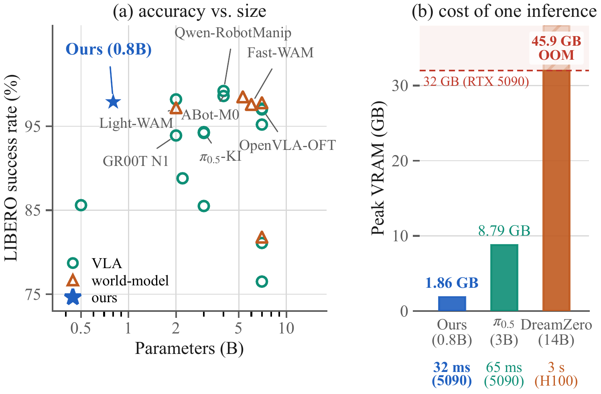

Abstract
Vision-Language-Action (VLA) models map observations to actions with no objective that accounts for how the world responds, so their robustness is bounded primarily by data coverage. World models carry precisely that missing objective and are better grounded for it, yet rolling the future forward costs seconds per decision and rules them out of the control loop. We show the two can be separated. What a world model knows about physical scenes lives in its internal features; generating the future is merely the objective that produced them, so the grounding can be inherited while the generative machinery is left behind.
We add one feature-alignment term to ordinary VLA training: a frozen world model is run over the training frames once and cached, and the student learns to agree with that cache. No teacher is loaded during training, the projector is discarded after it, and the deployed policy is identical to the undistilled baseline, running in 32 ms and 1.86 GB on a consumer RTX 5090, so every gain is attributable to the representation rather than to added capacity or test-time compute. A 0.8B student reaches 97.9% on LIBERO, improves from 48.2% to 50.5% on RoboCasa-GR1 humanoid manipulation, and the same objective carries over to real hardware, on both a single-arm and a bimanual platform. The gain survives changes of student scale, backbone, alignment layer, and teacher, indicating a broad representational prior rather than a fragile alignment between two particular networks.
A small policy at the accuracy of a large one
